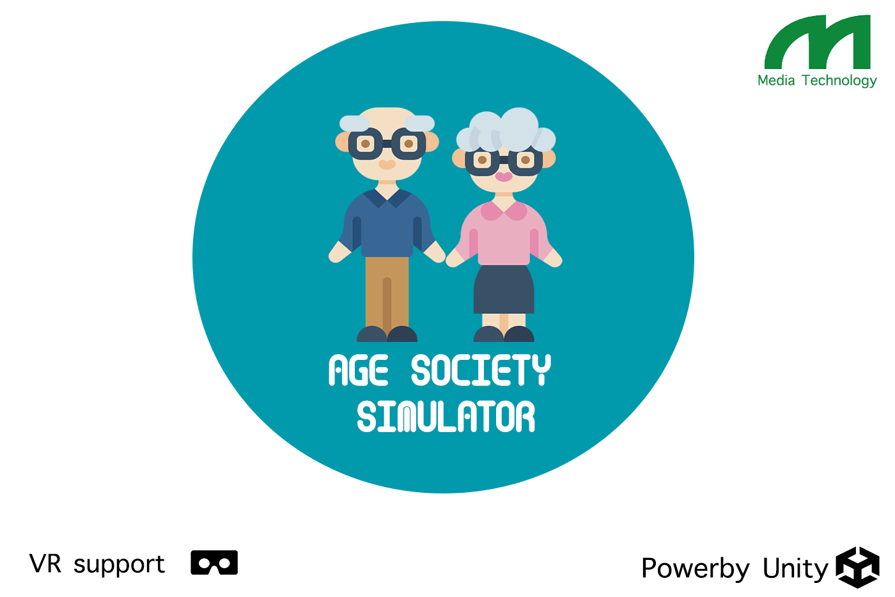
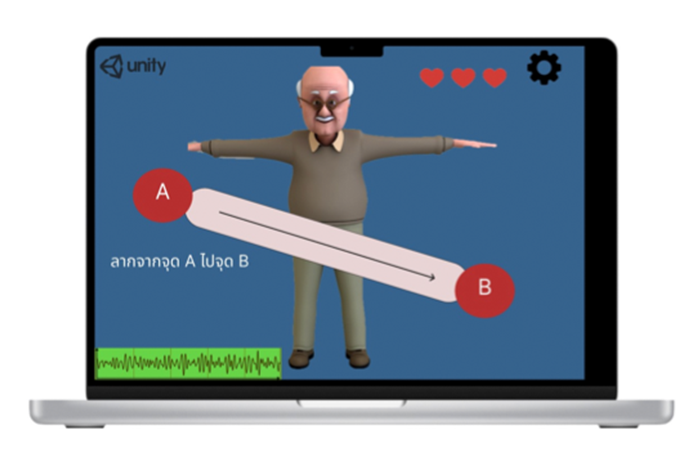
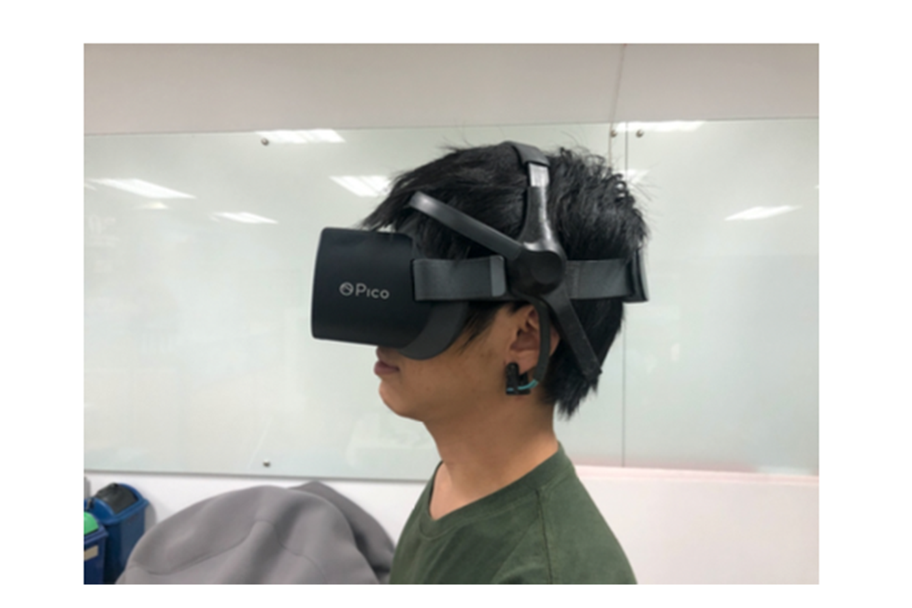
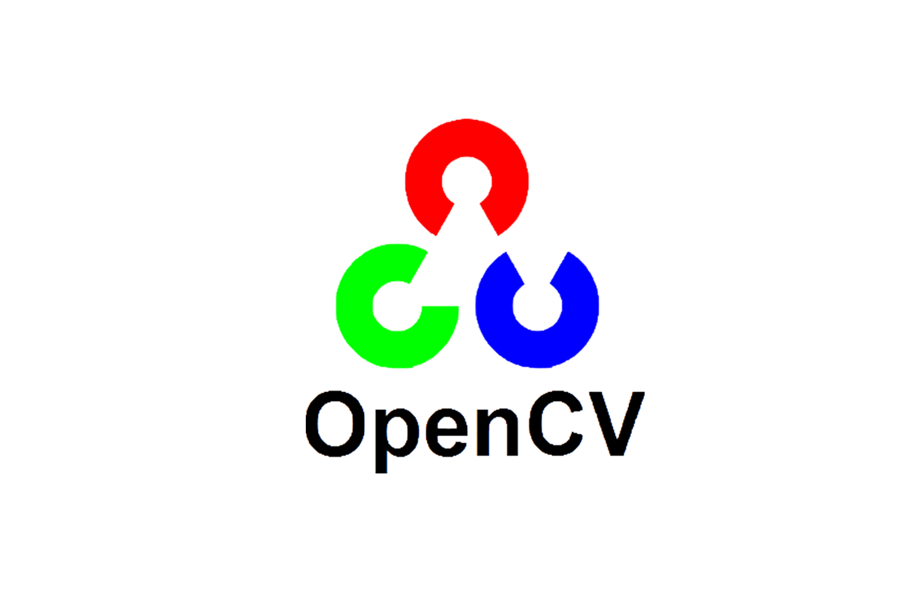
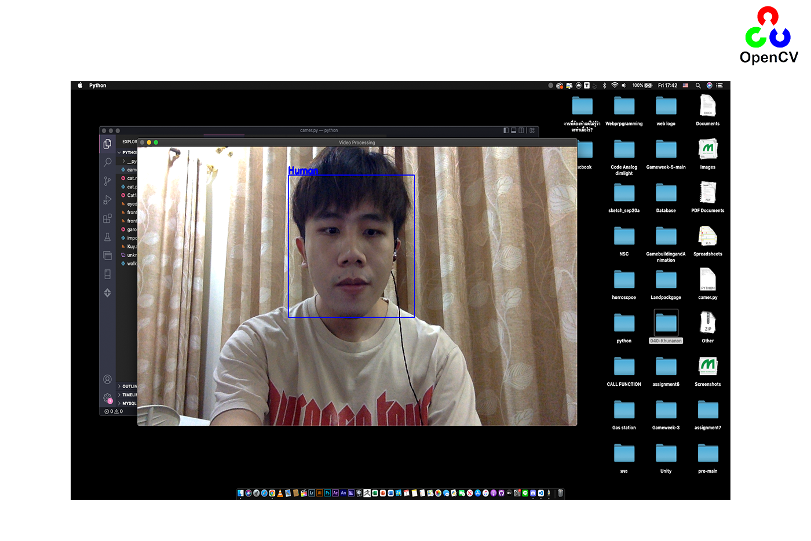
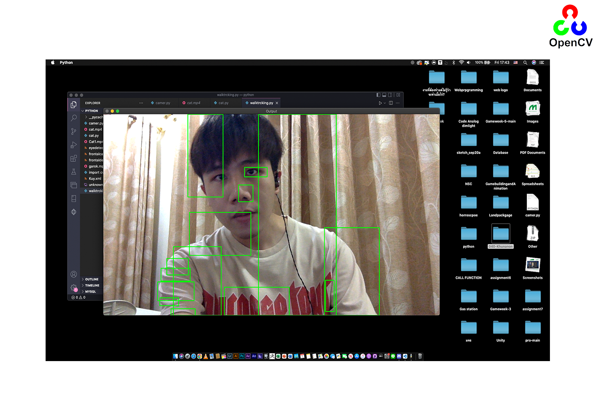

MY SENIOR PROJECT

Aged-SocietySimulator เป็นโปรแกรมที่นำเสนอในรูปแบบของเกมในทางกายภาพบำบัดสำหรับผู้สูงอายุเพื่อส่งเสริมให้เกิดการกายภาพบำบัด
จดจ่อและการมีสมาธิกับกิจกรรมที่กำลังปฏิบัติอยู่และได้ขยับร่างกายตามกิจกรรมนั้นๆด้วย
จุดเด่นของโปรเเกรมเพื่อผู้สูงอายุ คือ เป็นโปรแกรมที่ถูกพัฒนาในรูปแบบของเกมจำลองสถานการณ์ (Simulator)
ที่สามารถพบเจอได้ในชีวิตประจำวัน โดยจะอ้างอิงจากเหตุการณ์ที่ผู้สูงอายุเคยทำกิจกรรมนั้นๆมาก่อน
เพื่อให้เกิดความคุ้นชินกับสถานการณ์และไม่เกิดความวิตกกังวลขณะที่เล่น
อีกทั้งยังมีการสนับสนุนให้ผู้สูงอายุได้มีการเคลื่อนไหวทางกายภาพร่วมไปกับการฝึกสมองได้ฝึกสมองโดยการจดจ่อให้มีสมาธิ เป็นต้น

ปัจจุบันนี้ โปรแกรมเพื่อกายภาพบําบัดผู้สูงอายุนั้นมีค่อนข้างน้อย ยังไม่แพร่หลายในวงการการแพทย์มากนัก
โปรแกรมกายภาพบําบัดหลายๆ อันในปัจจุบันพบว่าไม่สามารถกายภาพบําบัดผู้สูงอายุได้ครอบคลุมทุกส่วนของร่างกาย
โปรแกรมบางโปรแกรมสามารถกายภาพบําบัดได้แค่แขนหรือขาเพียงอย่างเดียวเท่านั้น
ละโปรแกรมสําหรับผู้สูงอายุในปัจจุบันมักจะเป็นโปรแกรมฝึกสมองเพื่อป้องกันโรคทางสมองส่วนใหญ่
และอีกหนึ่งปัญหาที่สำคัญคือโปรแกรมทางกายภาพบําบัดผู้สูงอายุ มีการออกแบบขาดความน่าสนใจซึ่งทําให้ผู้ใช้งานเกิดความเบื่อหน่าย
เนื่องจากไม่มีสิ่งที่น่าดึงดูดและน่าสนใจมากพอ ทางทีมผู้พัฒนาจึงจะนำปัญหาดังกล่าวนี้
มาสร้างใหม่และพัฒนาเพื่อให้ตอบโจทย์กับการใช้ชีวิตของผู้สูงอายุที่มาทำการกายภาพบำบัดให้ได้มากที่สุด โดยการใช้ VR
My ImageProcessing FaceDetection Project

Image processing การประมวลผลภาพเป็นกระบวนการจัดการและวิเคราะห์รูปภาพให้เป็นข้อมูลในแบบดิจิทัล
โดยใช้คอมพิวเตอร์ในการประมวลผลโดยวิธีการต่าง ๆ พื่อให้ได้ภาพที่มีคุณสมบัติตามความต้องการทั้งในเชิงคุณภาพและปริมาณ
มีหลากหลายรูปแบบซึ่งที่ผมทำก็คือการทำ Facedetection โดยการ Import CV2 เข้ามา
และ นำ Dataset ที่เป็นไฟล์ Xml เข้ามาใช้เพื่อประมวลผลจับใบหน้าของคนโดยเฉพาะ และตอนนี้กำลังทำ ให้จับใบหน้าของสัตว์อื่นๆได้อย่างเช่นหมาและแมว

และอีกอันที่กำลังพัฒนาคือการทำ Motion Tracking ของวัตถุทุกอย่างที่เคลื่อนไหวภายในกล้อง
ไม่ว่าจะเป็นคนสัตว์หรือสิ่งของ ในอนาคตสามารถนำไปประยุกต์ใช้กับ Hradware ต่างๆได้
อย่างเช่นการตรวจแยกระหว่าง รถยนต์ กับ รถมอเตอร์ไซค์ในถนนเส้นหนึ่ง
หรือ การแยกผู้คนที่เข้ามาใช้บริการในห้างแห่งหนึ่งภายใน 1 วัน และแยกชายหญิงได้
